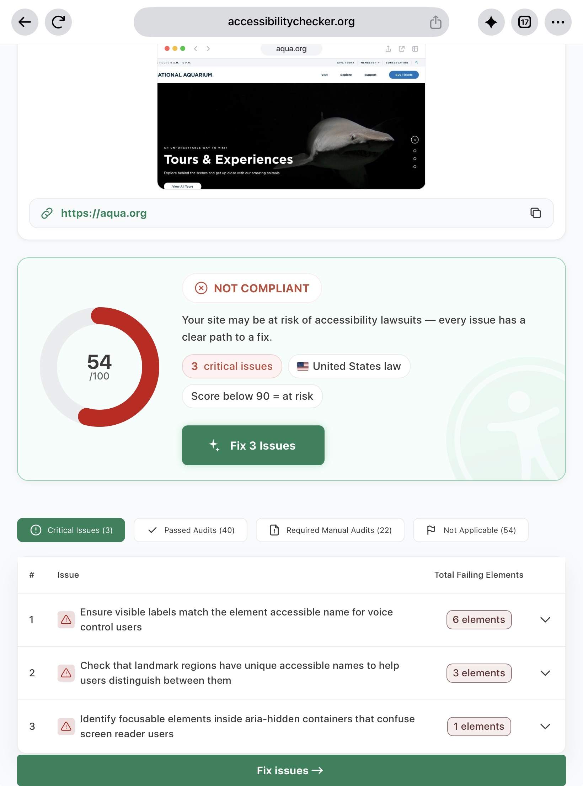
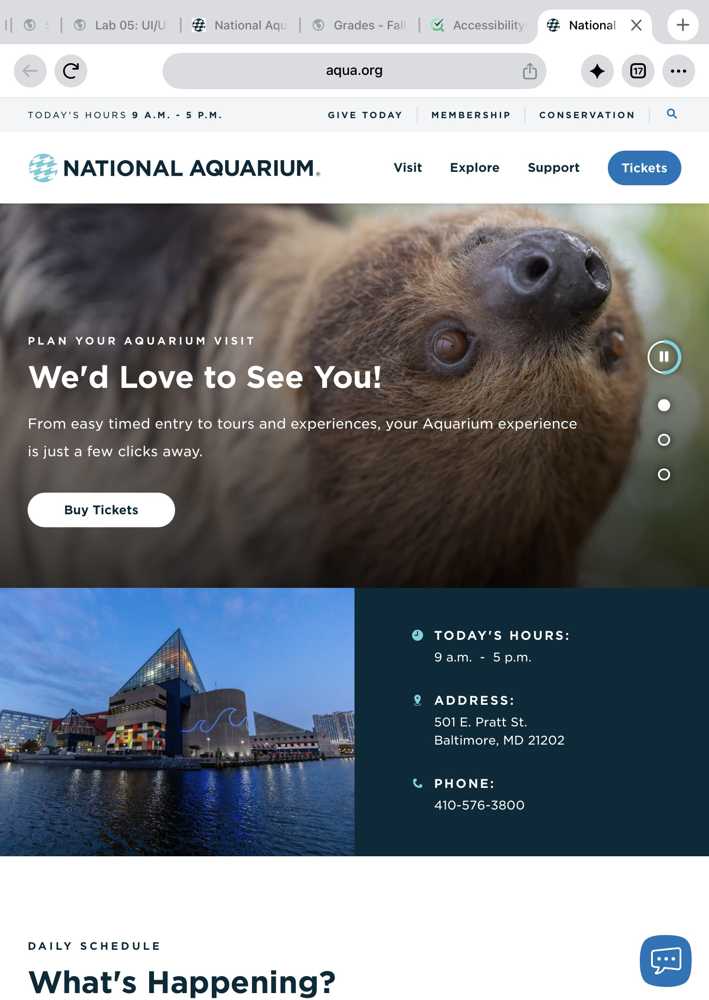

National Aquarium UI/UX Evaluation
This evalution looks at the usability, design, and accessibility of the National Aquarium website.
1.What is the URL of the website?
2. What is the name of the website?
The name of the website is the National Aquarium.
3. Who is the site's target audience?
The target audience includes families, students, teachers, tourists, and people interested in aquatic animals and conservation.
4. How is the site organized?
The website uses a hierarchical organization. The homepage connects visitors to sections about visiting the aquarium, animals, exhibits, education, and conservation.
5. Which CRAP Design Principle does the site use?
The website uses contrast by using different colors and large headings to make important information stand out. Repetition also helps keep the pages consistent
6. What is the Audit Score according to the Accessibility Checker?
The website received a score of 54 out of 100. The checker identified three critical issues.

7. What is the site's effectiveness?
he website provides information about the aquarium, its exhibits, and visiting options, helping visitors find information and plan a visit.
8. What is the site's efficiency?
The navigation and links help visitors find different sections without searching through unrelated information
9. How is the engagement?
The website is appropriate for an aquarium because it shares information about aquatic animals and conservation in an interesting way.
10. What is one recommendation to improve the website?
I recommend making sure images have useful alternative text and that text has enough contrast with its background. This can help more people access and read the website's information.
Website Screenshot
